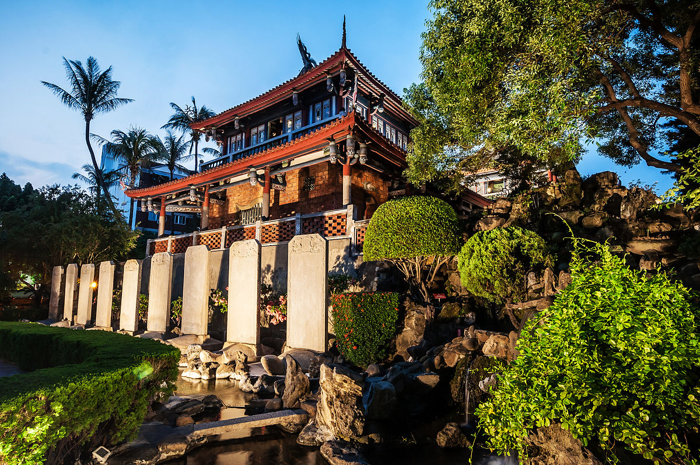

四草綠色隧道在台江國家公園內,裡面有溼地及豐富的生態資源,可以坐船遊覽由紅樹林交織成的綠色隧道,潮間帶的招潮蟹、彈塗魚與紅樹林,體會不一樣的大自然感受。
四草綠色隧道在台江國家公園內,裡面有溼地及豐富的生態資源,可以坐船遊覽由紅樹林交織成的綠色隧道,潮間帶的招潮蟹、彈塗魚與紅樹林,體會不一樣的大自然感受。
四草綠色隧道在台江國家公園內,裡面有溼地及豐富的生態資源,可以坐船遊覽由紅樹林交織成的綠色隧道,潮間帶的招潮蟹、彈塗魚與紅樹林,體會不一樣的大自然感受。
井仔腳瓦盤鹽田是北門的第一座鹽田,西元1818年開始曬鹽,因人工成本過高,在2002年停止曬鹽,鹽田漸漸荒廢,目前開發為觀光景點,遊客在此可體驗傳統曬鹽、挑鹽與收鹽。
1653年為當時進佔臺灣南部之荷人所建,最初稱為「普羅民遮城」,與安平的「熱蘭遮城」遙遙相對,互為犄角。熱蘭遮城作為荷蘭總督統治中樞,普羅民遮城則作為行政及商業中心。
 全臺首學」臺灣的第一座孔子廟臺南孔子廟創建於明永曆19年(1665年),當時稱為「先師聖廟」,至今已有三百多年的歷史,由島上第一個漢人政權鄭氏王朝所創立,為的是在臺開辦教育,培養為國效命的人才。清領時期亦延續功能,為臺灣官辦的最高學府「臺灣府學」所在地。直到今日,孔廟依然是讀書人的聖廟,有著崇高的地位。
全臺首學」臺灣的第一座孔子廟臺南孔子廟創建於明永曆19年(1665年),當時稱為「先師聖廟」,至今已有三百多年的歷史,由島上第一個漢人政權鄭氏王朝所創立,為的是在臺開辦教育,培養為國效命的人才。清領時期亦延續功能,為臺灣官辦的最高學府「臺灣府學」所在地。直到今日,孔廟依然是讀書人的聖廟,有著崇高的地位。
立即查看怎麼前進台南,利用下方資訊,帶你輕鬆出遊台南景點!